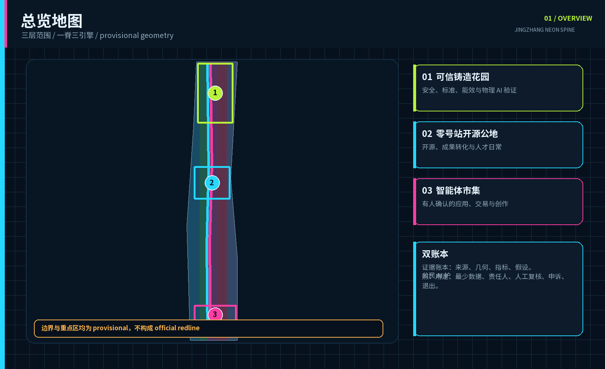
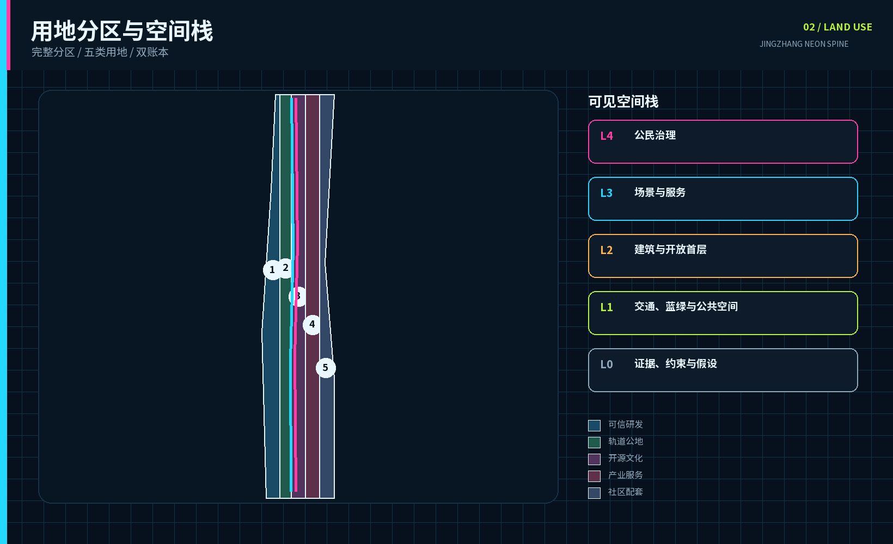
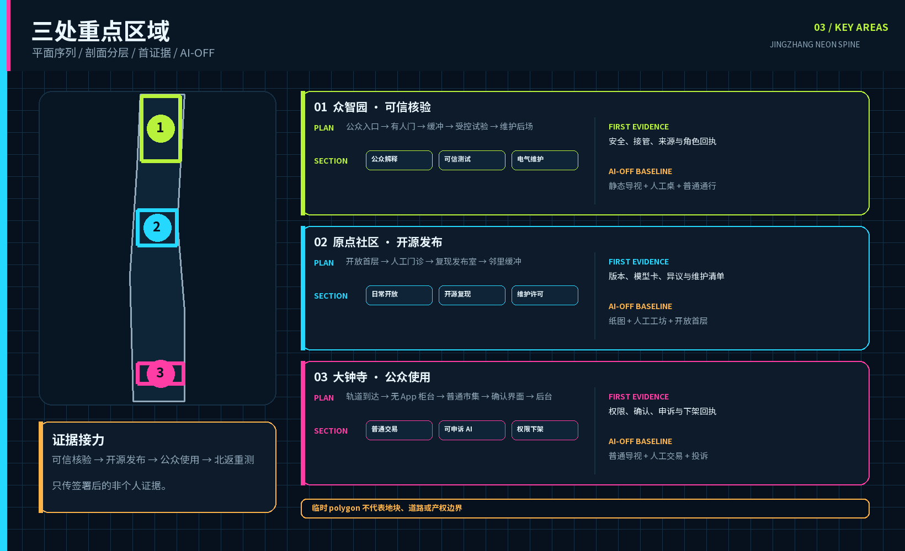
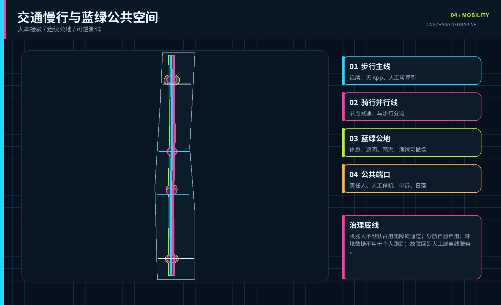
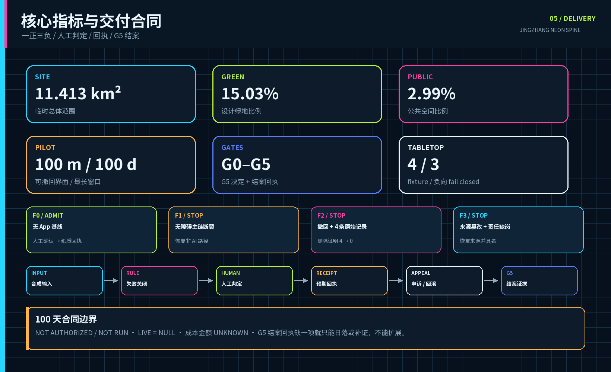

可信铸造花园
安全、标准、物理 AI 与边缘算力验证
霓光不是灯光造型，而是把用途、责任、AI 状态与退出公开显示的停机协议。
全部制图边界均为 provisional；不把相邻地块数值、候选角色或合成 PASS 写成审批与实绩。
总览地图把图面作为证据入口，而不是 official redline。

安全、标准、物理 AI 与边缘算力验证
开源、近校转化、人才日常与开放首层
有人确认的智能体、终端、内容与小微商业
用地分区保持完整概念分区；任务书三大定位与五大功能逐项映射到三引擎、两翼、十二端口和双账本。

建筑与更新项目都是待测绘、权属、消防、文保和实施复核的概念载体。三片区只接力签署后的非个人证据；失败回到众智园重测。

公众入口 → 有人门 → 缓冲 → 受控庭院 → 维护后场
首证据：安全、接管、来源与角色回执开放首层 → 人工门诊 → 复现发布室 → 邻里缓冲
首证据：版本、模型卡、异议与维护清单轨道到达 → 无 App 柜台 → 普通市集 → 确认界面 → 后台
首证据：权限、确认、申诉与下架回执
operational_status=not_authorized_not_run。合成 PASS 不是运行证据。
测绘、权属、文保、消防、无障碍和边界限制登记完成
不安装、不开放RACI 和人员/空间/设备/数据/维护/退出六本成本账有所有者与资金来源
不进入封闭测试七项权利、最少数据、无 App 等价、删除触发器齐备
退回合同设计4/4 符合预期，3/3 负向 fail closed
阻断公共试用并修规则关键无障碍障碍为 0；高风险输出 100% 人工确认；严重安全/隐私事件为 0
即时停机并恢复非 AI 路径主张、事件、投诉、维护、删除和反馈公开后决定继续/修改/日落
日落并撤除可逆构件
每卡都有待任命 A/R 与预算角色、最少资源、禁止数据、无 App 路径、候选指标、硬停止、恢复和首证据；现场值均为 null。
知情、选择、无 App 等价、人工复核、更正/删除、具名申诉、退出与恢复。
基本通行、安全信息、咨询、投诉和申诉不得要求购买设备、订阅、账户或额外付费。
FAR、高度、市政容量、就业、产值和全部成本金额保持 unknown。
23 条合规、15 条深度和 6 条标准现均使用逐项证据 bundle。
最终验证后持久化确定性、空间、视觉和专业四门结果。
risk.json 公开高不确定性并指定专业或公众复核；愿景叙事不能掩盖高风险。
来源见 sources.json：标题、发布者、检索、方法、范围、复用、转换与限制均登记。官方检索完成不等于地块控制到位。
验证规划名称、期限与公示回应；不提供本提交适用 polygon、FAR 或高度表。
验证地块化审查方法；60/36 米及 700 平方米记录严禁外推。
仅作公开征求意见阶段的定性参考；尚未证明正式印发或法定效力，也不产生地块数值。
支持原点社区公开语境；不证明委托、资金、数据共享或合作。
假设见 assumptions.json：官方边界、审定图则、权属、市政、文保、建筑普查、具名角色、资金和报价仍待补。